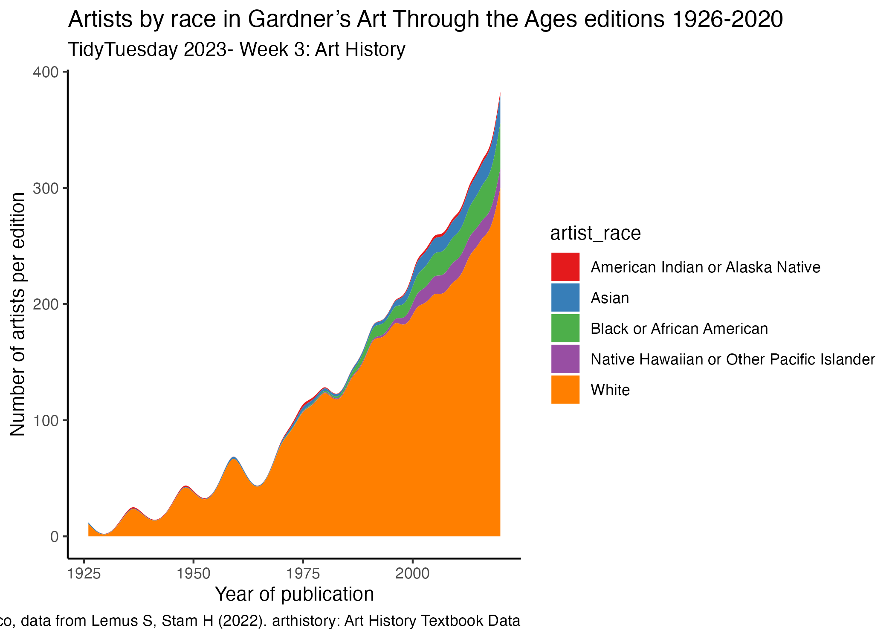

ggstream plot organized by artist_race in the dataset.{width = 100%}
ggwaffle organized by country. For the second, I recategorized the artist_nationaltity field to country, thinking I could get flags to represent the boxes in the plot, but this did not pan out. Either way, quite happy with the way these figures turned out. This is the featured image above.# TidyTuesday 2023- Week 3: Art History
library(tidytuesdayR)
library(tidyverse)
library(ggplot2)
library(dplyr)
library(ggstream)
library(glue)
library(ggwaffle)
artists <- readr::read_csv('https://raw.githubusercontent.com/rfordatascience/tidytuesday/master/data/2023/2023-01-17/artists.csv')
#Group data by year and count artists by nationality in each edition
arthistory_summed <- artists %>%
filter(book == "Gardner")%>%
filter(artist_nationality != "N/A") %>%
separate(col= artist_nationality, into = c("nationality1", "nationality2"), sep = "-") %>%
group_by(year) %>%
count(nationality1) %>%
arrange(year, desc(n), nationality1)
ggplot(arthistory_summed, aes(x=year, y=n, fill=nationality1)) +
geom_stream()
#group artists by race and count
arthistory_byRaceCount <- artists %>%
filter(artist_race != "N/A",
book == "Gardner") %>%
select(year, book, space_ratio_per_page_total, artist_race) %>%
group_by(year,book, artist_race) %>%
count(artist_race)
#plot for Gardner book only.
ByRace <- ggplot(arthistory_byRaceCount, aes(x=year, y=n, fill=artist_race)) +
geom_stream(type = "ridge")+
#facet_grid(~book)+
scale_fill_brewer(palette = "Set1")+
ylab("Number of artists per edition")+
xlab("Year of publication")+
labs(title= "Artists by race in Gardner’s Art Through the Ages editions 1926-2020",
subtitle = "TidyTuesday 2023- Week 3: Art History",
caption= "Created by @stevendifalco, data from Lemus S, Stam H (2022). arthistory: Art History Textbook Data",
color = "Artist Race")+
theme_classic()
## Saves the plot
ggsave("ArtbyRace.png", plot = ByRace)
#waffle plot
# mutate date so that country is reassigned for top countries
artists_byArtists <- artists %>%
filter(book == "Gardner")%>%
filter(artist_nationality != "N/A") %>%
separate(col= artist_nationality, into = c("nationality1", "nationality2"), sep = "-") %>%
group_by(artist_name, nationality1)%>%
count(artist_name) %>%
mutate(country = nationality1) %>%
mutate(country = case_when(country == "American" ~ "usa",
country == "French" ~ "france",
country == "German" ~ "germany",
#country == "Indian" ~ "india",
country == "Italian" ~ "italy",
country == "Japanese" ~ "japan",
country == "British" ~ "uk",
country == "Swiss" ~ "switzerland",
#country == "Spanish" ~ "spain",
TRUE ~ "other")) %>%
mutate(flag = tolower(country),
#flag = stringr::str_remove_all(flag, "[:punct:]"),
flag = glue::glue("2023-1-17/icons/{flag}.png"))%>%
arrange(desc(n))
#waffle data for plot
waffle_data <- waffle_iron(artists_byArtists, aes_d(group = country),rows=10) %>%
mutate(country=group)
#ggplot with waffle data
## Define coordinates for the titles
Plot <- ggplot(waffle_data, aes(x, y, fill=country))+
geom_waffle()+
scale_fill_brewer(palette = "Dark2")+
coord_equal()+
labs(title= "Artists by Country in Gardner’s Art Through the Ages editions 1926-2020",
subtitle = "TidyTuesday 2023- Week 3: Art History",
caption= "Created by @stevendifalco, data from Lemus S, Stam H (2022). arthistory: Art History Textbook Data")+
theme_void()+
theme(
axis.title.x = element_blank(),
axis.title.y = element_blank(),
panel.border = element_blank(),
plot.background = element_rect(fill = "white"))
## Saves the plot
ggsave("Featured.png", plot = Plot)